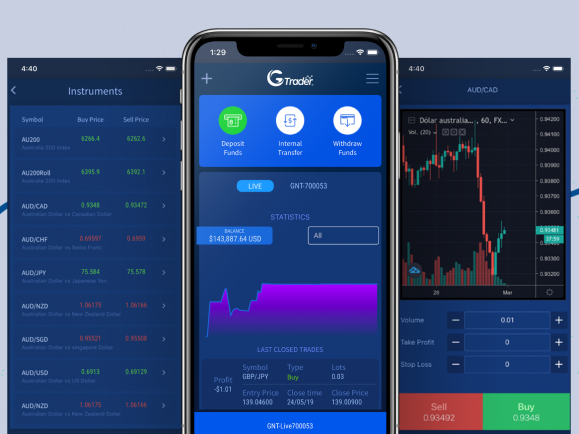
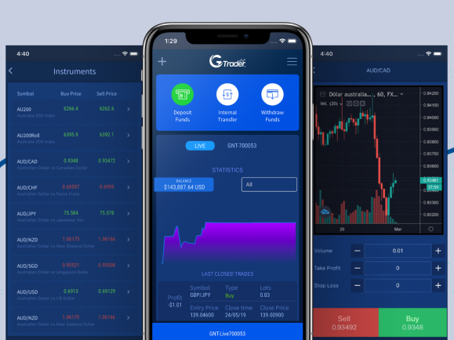

Project Name
Global Next Trade
Tasks
- → Design landing page and webapp.
- → Understand the forex market.
- → Working along with stakeholders.
The problem
Lack of visual consistency
As the lead junior designer, one of the first
challenges was the lack of visual consistency and not a real brand
identity either, none of the primary brand colors were being used.
The solution? a redesign had to be done, to create a more professional intuitive look for traders and investors.
 
